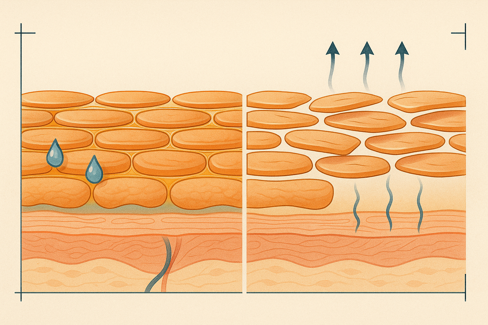
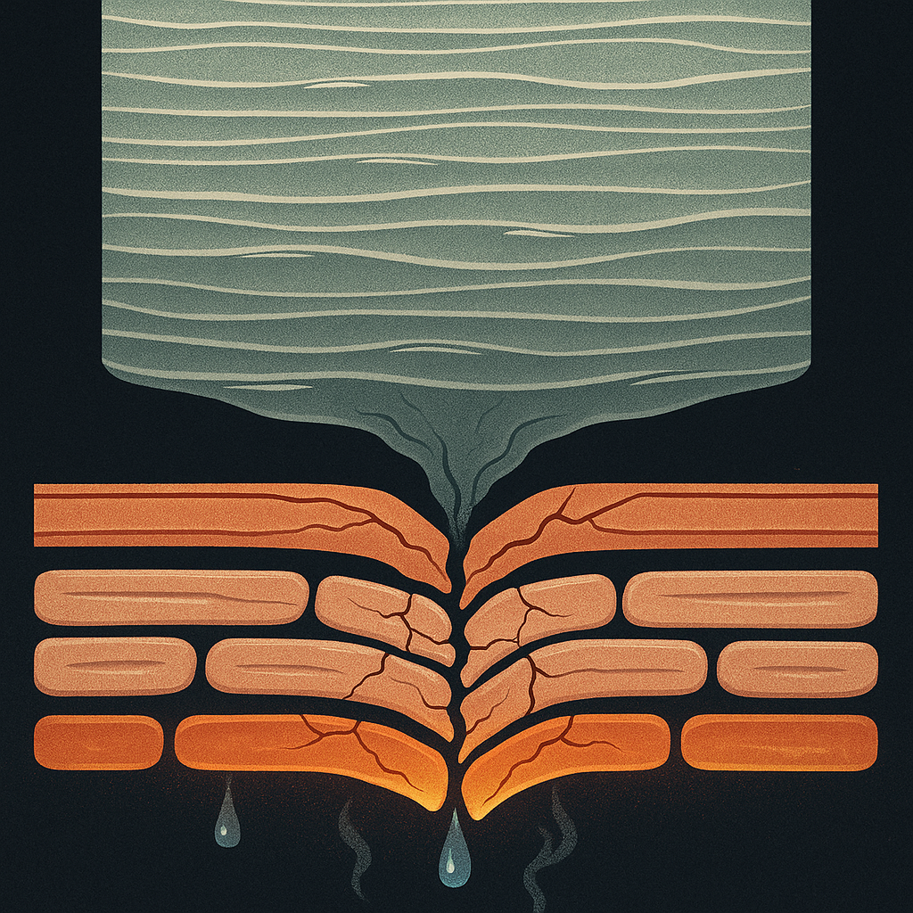
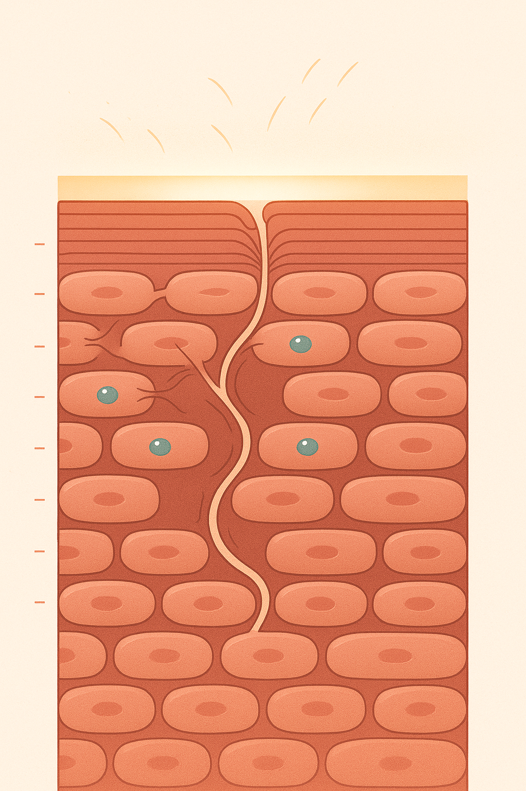

Review below. Reply approve to publish the Facebook post, or tell me edits.

If your skin has started stinging when it never used to, the problem may not be that you are missing an ingredient. It may be that you are using too many.
That is an odd thing for a skincare brand to say. We would make more money if you bought more. But the most useful thing we can tell most people is to reach for less, not more, and to understand why. Your skin is not a shelf you keep restocking. It is a barrier you keep intact over years. Skin longevity is mostly about protecting that barrier, not winning a war on wrinkles.
Before you add anything, take things away. For most reactive skin, this is the whole intervention:
Give that two to four weeks before you judge anything. Most stinging, tightness and reactive flaking settle on their own once you stop provoking them. The rest of this piece is the why.
The outermost layer of your skin has a proper name: the stratum corneum. Stripped of the jargon, it works like a brick wall. The bricks are flattened, dead skin cells called corneocytes. The mortar sealing them together is a blend of lipids (fats, cholesterol and ceramides). That is the whole structure.
Its job is simple and non-negotiable: keep water in, and keep irritants, allergens and bacteria out. When the mortar is intact, skin holds its moisture, sits calm, and tolerates the world. When the mortar breaks down, the wall gets leaky.
Most barrier damage is not dramatic. It is the slow accumulation of well-meaning habits.
There is a plain-language term for what happens next: transepidermal water loss, or TEWL. When the mortar is compromised, water escapes through the wall and evaporates. Skin dries out, tightens, and starts to react to things that never used to bother it.
You usually feel a stripped barrier before you see it. The common signs:
If two or three of these sound familiar, the answer is almost never another product.
Here is the counterintuitive part. The barrier is the thing that does the actual protecting. It is your skin's own defence. So if it is already compromised and you respond by adding another active to fix the redness or the flaking, you are often attacking the wall with the very tool meant to help.
More acids to smooth the flaking strip more lipids. A stronger retinoid to firm the skin thins an already-thin wall. You end up in a loop: irritation, a new product to fix it, more irritation. The way out is to stop chiselling and let the mortar rebuild, which it can do surprisingly well when left alone.
This is the longevity reframe. Skin you keep intact for decades beats skin you strip and repair on a monthly cycle. Doing less, consistently, usually wins.
We sell a light therapy mask, so here is the honest placement.
A ten-minute light step is unusual for one specific reason: it is not topical. It does not sit on the skin, dissolve anything, or add another layer for the barrier to cope with. There is nothing to strip, nothing to react to. Light (7 colours across a face and neck device, 309 emission points, ten minutes a day) supports the skin gently over weeks rather than working against the wall. This is sometimes called red light therapy or LED light therapy at home. Done gently it is low-risk, but it is not a repair tool on its own.
Now the limit, stated plainly, because this matters more than any benefit: light will not repair a barrier you are actively stripping. If you keep over-cleansing and stacking daily acids, a light session will not save you. It is a cosmetic device, not medicine, and it is not a substitute for fixing the routine underneath it. The first fix is always subtraction.
We will be direct about our own incentive, and we already have been: we are still telling you to buy and use less. That honesty is the point. A simpler routine that keeps your barrier intact is better for your skin than another serum, and better for your trust in us than a sale we did not earn.

The most useful thing you can do for your skin this year might be throwing products out, not buying more.
Quick science, because it helps. Your skin barrier is a brick wall: flat cells are the bricks, fats and oils are the mortar. Its only job is holding water in and irritants out. We wreck it in predictable ways: over-cleansing, hot water, scrubs, and layering acids and a retinoid every single night.
Crack the mortar and water quietly escapes. Now skin feels tight, stings at products it used to love, and reacts to everything. That "congestion" you are chasing? Often just irritation wearing a costume. The bricks are usually fine. It is the mortar that needs a rest.
Here is the honest turn. Most routines are a subtraction problem, not a shopping problem. Calm it right down first: gentler cleanser, lukewarm water, one active at a time, a plain moisturiser. A gentle light step is the odd one out only because it is non-topical, so it adds nothing to the wall to disrupt and supports skin slowly over weeks. It will not rescue a barrier you are actively stripping, and it is a cosmetic device, not medicine.
We are a new Australian brand, still earning our reviews, so take this as information, not a pitch.
If you want a closer look at what we make once the rest of your routine is calm, the link is in the first comment.
Honest question: what did you cut from your routine that your skin actually thanked you for?
**Hashtags:** #skinbarrier #skinimalism #skincaretips #redlighttherapy #skinlongevity

Your skin barrier is a brick wall. Most routines are taking a chisel to it.
Here is the structure:
Bricks = your skin cells.
Mortar = the lipids between them.
Its whole job: keep water in, keep irritants out.
What chips away at it:
Over-cleansing. Hot water. Scrubs. Daily acids stacked on top of retinoids.
How you know it is happening:
Tightness. Stinging. Redness. Flaking. Breakouts that are really irritation wearing a disguise.
The counterintuitive part:
The fix is usually subtraction, not another serum. Pare the routine back. Let the mortar rebuild.
Where a light step fits:
It is not topical, so there is nothing to strip. It adds no acid, no fragrance, no fresh irritant to a wall that is already struggling. It simply supports the skin gently over weeks. Cosmetic device, not medicine. And it will not save a barrier you are still chiselling at every night.
Think of it like this: you do not repair a wall by adding more chisels. You put the chisels down first.
Which are you guilty of, over-cleansing, hot water, or stacking actives? Comment below.
New AU brand, still earning our reviews. Closer look at the mask in bio if you want it.
**Hashtags:** #skinbarrier #skinbarrierrepair #skinminimalism #skincaretips #skinlongevity #barrierhealth #skincareau #australianskincare
**Title:** Skin Barrier Repair: Why Doing Less Beats Adding Another Serum
**Description:** Your skin barrier works like a brick wall: skin cells are the bricks, lipids are the mortar that holds water in. Over-cleansing, hot water and stacking daily acids strip that mortar, which is why reactive, stinging skin is usually a subtraction problem, not a shopping one. Simplify to a gentle cleanser and a plain moisturiser, and give the wall a few weeks to rebuild before adding anything.
Light therapy at home is one calm, non-topical step that supports skin gently over weeks, not a fix for an already-stressed barrier, and it is a cosmetic device, not medicine. If you want a closer look at how an LED face mask fits a pared-back routine, it is here: https://redermis.com.au/products/medical-grade-silicone-7-wevelenghts-photon-led-mask-face-and-neck-red-light-therapy-flexible-facial-mask-repair-skin-wireless-use
**Hashtags:** #SkinBarrier #Skinimalism #RedLightTherapy #SkincareRoutine #SkinLongevity